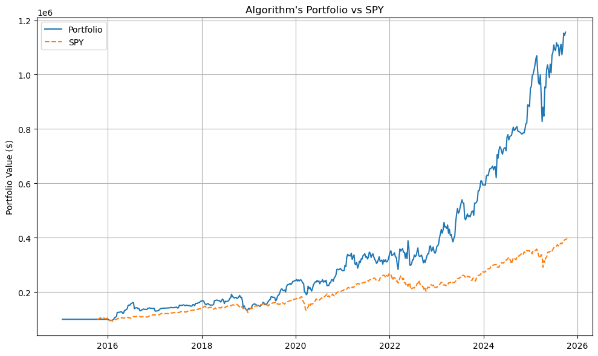

Algorithmic Trading Bot
Personal project building an automated portfolio selection and trading system using technical, fundamental, sentiment, and alternative market signals.

Project Snapshot
- Universe: S&P 500 equities
- Dataset Size: 6+ million historical records
- Features: 30 engineered indicators
- Time Horizon: 10+ years of historical data
- Model: Random Forest ensemble
- Execution: Weekly automated portfolio rebalancing
- Performance: Sharpe Ratio ≈ 1.2 in backtesting
Overview
This project explores how multiple categories of financial data can be combined into an automated portfolio selection system. The goal was to move beyond simple technical trading strategies and instead build a data-driven process that integrates technical indicators, fundamental company data, sentiment signals, and alternative datasets.
The system collects and processes market data, generates predictive signals, evaluates portfolio performance through historical backtesting, and automatically executes trades through a brokerage API.
Data Pipeline
I built scripts to download historical market data for stocks in the S&P 500 using the yfinance API. Over a 10+ year window this produced a dataset with more than 6 million rows of historical observations including open, high, low, close, and volume data.
I then expanded the dataset with additional external sources:
- Technical indicators: momentum, volatility, and trend signals
- Fundamental data: financial metrics from the Finnhub API
- Alternative data: congressional trades, lobbying activity, government contracts, and news sentiment from QuiverQuant
After cleaning and joining the data sources, I engineered approximately 30 predictive features used for model training and portfolio selection.
Modeling Approach
I experimented with several modeling strategies before settling on a Random Forest model. The final model uses an ensemble of indicators to rank stocks each week and construct a portfolio of the most attractive trades.
Rather than optimizing purely for prediction accuracy, I evaluated strategies based on portfolio-level metrics including alpha, beta, volatility, and Sharpe ratio.
Backtesting & Simulation
The strategy was tested across more than a decade of historical data. I ran repeated simulations of weekly trading to evaluate portfolio behavior, risk exposure, and consistency over time.
I also visualized cumulative performance and drawdowns to ensure the strategy performed consistently across different market conditions.
Automation & Execution
Once the strategy was validated through backtesting, I connected the system to the Alpaca trading API to automate execution. The workflow automatically selects the weekly portfolio and rebalances positions using scheduled scripts.
Jobs are scheduled using Windows Task Scheduler, allowing the system to run autonomously and execute trades on a weekly basis.
Outcome
The final strategy achieved a Sharpe ratio of approximately 1.2 in historical backtesting across the 10+ year dataset. More importantly, the project demonstrated how diverse market signals can be integrated into a repeatable and automated trading workflow.
Key Takeaways
- Built a trading dataset with over 6 million rows of historical market data
- Engineered 30 predictive features combining technical, fundamental, and alternative signals
- Selected a Random Forest ensemble based on portfolio-level optimization metrics
- Achieved a Sharpe ratio of ~1.2 through 10+ years of backtesting
- Automated portfolio rebalancing through Alpaca API and scheduled workflows